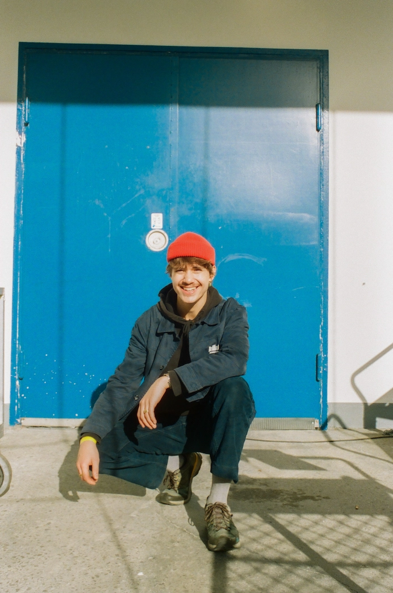

Om Mig
Jeg befidner mig i en fase i mit liv, hvor jeg arbejder meget med
mig selv, og prøver på at omstille mit tidligere hverdagsliv samt
rutiner til fordel for mit fysiske og mentale helbred. Det gør jeg
fordi jeg for halvandet år siden, fik mig en hjernerystelse, med
senfølger der stadig påvirker mit liv.
Det er bl.a. problematikker som søvnbesvær, koncentrationsbesvær,
manglende overblik og manglende motivation/overskud til at
færdiggøre ting. Men derudover har jeg en stor interesse for at
tage billeder af artister til koncerter og på diverse festivaler.
CV
Uddannelse
- KEA, MultimedieDesigner - 2024
Erhvervserfaring
- KEA, Studerende - 2024
- Smukfest, SoMe Manager - 2022-2024
Færdigheder
- Jeg har mange idéer.
- Jeg spotter hurtigt tendenser.
- Jeg får folk til at føle sig godt tilpas.
